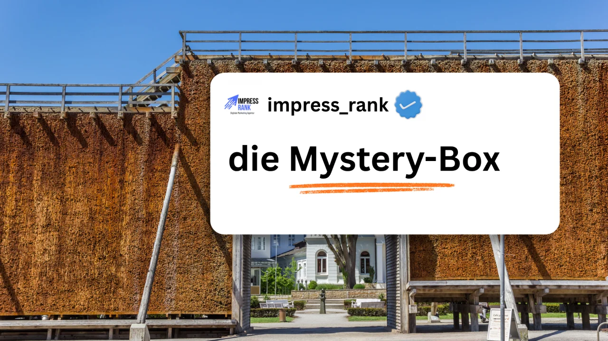

Hi,
have you ever tried running Google Ads?
Once they are running, they really are brilliant.
But getting to that point?
Pure madness.
You get the feeling Google fired its UX team sometime in 2016 and the developers said:
“Oh, it's fine. We'll do it on the side.”
And the result?
You can't find anything, every little thing seems to take seven clicks and some of the reports are about as clear as a tax return in Ancient Greek.
Especially if you have never worked with Google Ads before.
I'm 20 and I like playing strategy games.
At some point a friend of mine wanted to explain to me how Hearts of Iron 4 works.
So I thought: “How hard can it be?”
Wrong.
“How do I attack?”
“You don't. First you have to build up your army.”
Okay. So press a few buttons, click through menus, produce some stuff.
A few minutes later I think I'm finally making progress.
And suddenly it looks like I'm losing World War II.
Not ideal.
“Ships are coming. How do I destroy them?”
“You don't.”
“Excuse me?”
“You lost your fleet four turns ago.”
“WHAT?! When did that happen?”
“Well, you should have checked the navy menu.”
He looked at me as if I had just tried to hammer a nail into the wall with a banana.
And that is exactly how Google Ads feel when you work with them for the first time.
So my advice:
Keep it simple.
Start with a search campaign and ignore all the other stuff for now.
That way you get a feel for the platform and can work your way forward step by step over the next few weeks.
Or:
Bring in someone who knows their way around.
Whether it's me, someone else or some Google Ads nerd doesn't matter at all.
But having someone at your side who has been working in this field for years saves you an incredible amount of time and nerves.
Google Ads are really powerful and I can recommend them to every business.
I just hope Google decides to hire a real UX designer at some point.
For a company worth billions, that should be doable.
Best regards
John
Free intro call
Want to know how to win more new customers? In a free intro call we look together at where you stand.
Book your free intro call